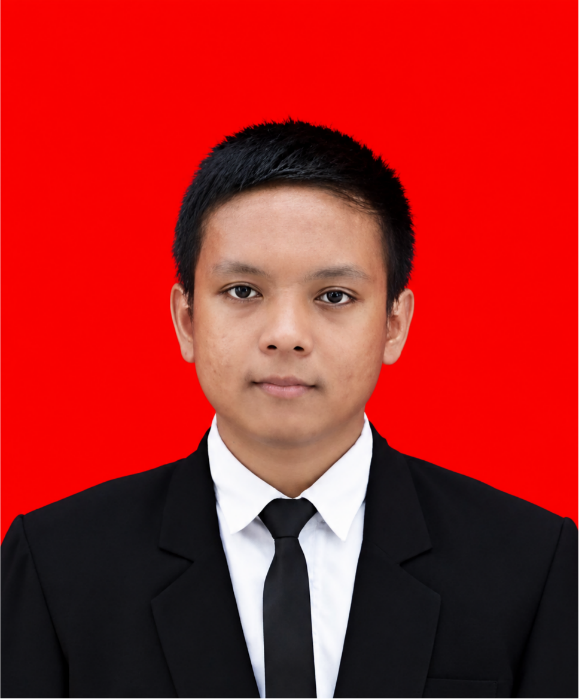

Saya adalah mahasiswa Teknik Informatika yang memiliki ketertarikan pada teknologi dan programming, serta terus belajar mengembangkan kemampuan melalui tugas dan berbagai project sederhana.
Lihat Project Hubungi Saya
Saya adalah mahasiswa Teknik Informatika yang memiliki minat dan fokus pada Programming. Saya tertarik mempelajari bagaimana program dapat digunakan untuk membuat banyak hal yang sederhana, menarik, dan bermanfaat.
Saat ini saya sedang mengembangkan kemampuan dalam HTML, CSS, Java, dan berbagai dasar pemrograman lainnya. Saya juga belum terbiasa menggunakan Visual Studio Code dalam proses belajar dan mengerjakan sebuah project. Saya terus berusaha meningkatkan kemampuan problem solving, kreativitas, dan pemahaman saya dalam bidang programming.
Currently Learning & Developing
Website portfolio sederhana yang dibuat menggunakan HTML dan CSS.
Berbagai program sederhana yang dibuat selama perkuliahan sebagai bagian dari proses belajar dan mengembangkan kemampuan pemrograman Java.
📩 Email: ahfirmansyah02@gmail.com
📞 Whatsapp: +62 882-1479-4725